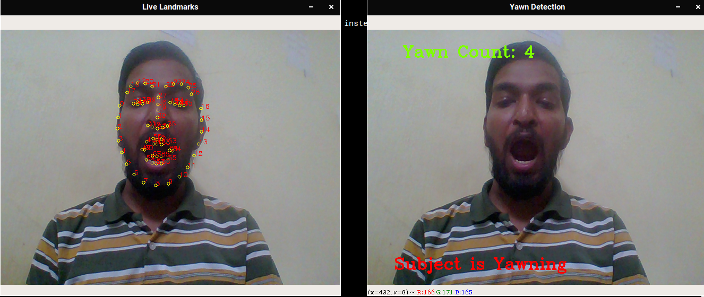

Here we will try to obtain all the features of mouth using Dlib's model shape_predictor_68_face_landmarks.
Let’s look at an code :
# Import neccessary libraries
import cv2
import dlib
import numpy as np
# Load shape_predictor_68_face_landmarks model
PREDICTOR_PATH = "shape_predictor_68_face_landmarks.dat"
# Create predictor and detector
predictor = dlib.shape_predictor( PREDICTOR_PATH)
detector = dlib.get_frontal_face_detector()
# Obtain facial landmark from the image
def get_landmarks(im):
rects = detector(im, 1)
if len(rects) > 1:
return "error"
if len(rects) == 0:
return "error"
return np.matrix([[p.x, p.y] for p in predictor(im, rects[0]).parts()])
# This Function will return image with landmarks on the image
def annotate_landmarks(im, landmarks):
im = im.copy()
for idx, point in enumerate(landmarks):
pos = (point[0, 0], point[0, 1])
cv2.putText(im, str(idx), pos, fontFace= cv2.FONT_HERSHEY_SCRIPT_SIMPLEX, fontScale=0.4, color=(0, 0, 255))
cv2.circle(im, pos, 3, color=(0, 255, 255))
return im
# This Function will obtain the mean points of top lip
def top_lip(landmarks):
top_lip_pts = []
for i in range(50,53):
top_lip_pts.append( landmarks[i])
for i in range(61,64):
top_lip_pts.append( landmarks[i])
top_lip_all_pts = np.squeeze( np.asarray( top_lip_pts))
top_lip_mean = np.mean(top_lip_pts, axis=0)
return int(top_lip_mean[:,1])
# This Function will obtain the mean points of bottom lip
def bottom_lip(landmarks):
bottom_lip_pts = []
for i in range(65,68):
bottom_lip_pts.append( landmarks[i])
for i in range(56,59):
bottom_lip_pts.append( landmarks[i])
bottom_lip_all_pts = np.squeeze(np.asarray( bottom_lip_pts))
bottom_lip_mean = np.mean(bottom_lip_pts, axis=0)
return int(bottom_lip_mean[:,1])
# This Function will return distance between landmark image and two lips
def mouth_open(image):
landmarks = get_landmarks(image)
if landmarks == "error":
return image, 0
image_with_landmarks = annotate_landmarks(image, landmarks)
top_lip_center = top_lip(landmarks)
bottom_lip_center = bottom_lip(landmarks)
lip_distance = abs(top_lip_center - bottom_lip_center)
return image_with_landmarks, lip_distance
# Create VideoCapture instance for video camera
cap = cv2.VideoCapture(0)
# Intialize yawn to zero and set status to False
yawns = 0
yawn_status = False
# The block will run unless it is break
while True:
# Read frames from webcam
ret, frame = cap.read()
# Obtain image_landmarks lip_distance from mouth_open function for current frame.
image_landmarks, lip_distance = mouth_open(frame)
# Store current yawn_status in prev_yawn_status
prev_yawn_status = yawn_status
# If the lips distance is more than 25 then display subject is yawning along with yawn count.
if lip_distance > 25:
yawn_status = True
cv2.putText(frame, "Subject is Yawning", (50,450), cv2.FONT_HERSHEY_COMPLEX, 1,(0,0,255),2)
output_text = " Yawn Count: " + str(yawns + 1)
cv2.putText(frame, output_text, (50,50), cv2.FONT_HERSHEY_COMPLEX, 1,(0,255,127),2)
# If not lips distance is less than 25 then set yawn status to False
else:
yawn_status = False
# Increasing yawn count if subject was yawning in previous frame as well
if prev_yawn_status == True and yawn_status == False:
yawns += 1
# Display live landmark of face
cv2.imshow('Live Landmarks', image_landmarks )
# Display frame which contain Yawn count
cv2.imshow('Yawn Detection', frame )
# Press Enter key to break loop
if cv2.waitKey(1) == 13:
break
# Relase and distroy destroy All Windows
cap.release()
cv2.destroyAllWindows()
Our Output image will look like this:
